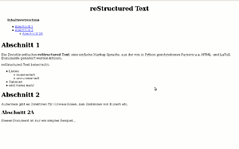

docutils
Dieser Artikel wurde für die folgenden Ubuntu-Versionen getestet:
Ubuntu 16.04 Xenial Xerus
Ubuntu 14.04 Trusty Tahr
Zum Verständnis dieses Artikels sind folgende Seiten hilfreich:
Die Docutils  sind ein Sammlung von (Hilfs-)Programmen, mit denen Textdateien sehr einfach in HTML-Seiten, LaTeX-Dokumente, XML-Dateien und S5-Präsentationen umgewandelt werden können. Die Quelldatei ist dabei immer die gleiche, lediglich der eingesetzte Textparser bestimmt das "Ergebnis".
sind ein Sammlung von (Hilfs-)Programmen, mit denen Textdateien sehr einfach in HTML-Seiten, LaTeX-Dokumente, XML-Dateien und S5-Präsentationen umgewandelt werden können. Die Quelldatei ist dabei immer die gleiche, lediglich der eingesetzte Textparser bestimmt das "Ergebnis".
Die Docutils entstammen dem Python-Umfeld und sind auch komplett in Python geschrieben, aber ansonsten nicht Python-spezifisch, sondern universell einsetzbar.
Als Markup-Sprache verwenden die Docutils reStructuredText , eine sehr einfache Markup-Sprache, welche der Syntax eines Wikis nicht unähnlich ist. reStructuredText ist unter Python die Standard-Sprache für Dokumentationen.
Installation¶
Aus den offiziellen Paketquellen sind die Docutils für Python 3.x über folgendes Paket installierbar [1]:
python3-docutils
 mit apturl
mit apturl
Paketliste zum Kopieren:
sudo apt-get install python3-docutils
sudo aptitude install python3-docutils
Für Python 2.x lautet der Paketname:
python-docutils
mit apturl
Paketliste zum Kopieren:
sudo apt-get install python-docutils
sudo aptitude install python-docutils
Manuell¶
Hinweis!
Fremdsoftware kann das System gefährden.
Die manuelle Installation ist sehr einfach. Man lädt den aktuellen Snapshot  herunter und installiert ihn via pip [2]:
herunter und installiert ihn via pip [2]:
pip install docutils-code-VERSION-trunk.zip
Soll das Programm systemweit installiert werden, muss pip mit Root-Rechten [3] ausgeführt werden. Weitere Details findet man auch in der Anleitung zur Installation auf der Projektseite.
Verwendung¶
Prinzipiell kann man Dokumente in reStructuredText-Syntax mit jedem beliebigen Editor erstellen [4]. Es gibt aber auch spezielle Editoren wie z.B. ReText, die eine Vorschau beinhalten, was insbesondere zum Erlernen der Syntax praktisch ist.
Eine Einführung in die Syntax findet man in der offiziellen Dokumentation , aufgeteilt in die Bereiche "User-Dokumentation" und "Reference Documentation". Wer es besonders eilig hat, liest die Schnellanleitung .
Die Syntax erlaubt alle bekannten Elemente wie interne und externe Links, Hervorhebungen, Tabellen, Listen, Fußnoten, automatische Inhaltsverzeichnisse, Hinweisboxen, Einbinden von Bildern und vieles mehr.
Im Folgenden ein kurzes, einfaches Beispiel:
==================== reStructuredText ==================== .. contents\\:\\: Inhaltsverzeichnis Abschnitt 1 ~~~~~~~~~~~~ Die *Docutils* enthalten **reStructuredText**, eine einfache Markup-Sprache, aus der von in Python geschriebenen Parsern u.a. HTML- und LaTeX-Dokumente generiert werden können. reStructuredText beherrscht: * Listen - nummeriert - unnummeriert * Tabellen * und vieles mehr Abschnitt 2 ~~~~~~~~~~~~ Außerdem gibt es Direktiven für Hinweis-Boxen, zum Einbinden von Bildern etc. Abschnitt 2A ############## Dieses Dokument ist nur ein simples Beispiel... mit einem externen Link auf die Homepage von Python_ .. _Python : http://www.python.org
Hinweis:
In der Zeile .. contents\\:\\: Inhaltsverzeichnis sind die rückwärtigen Schrägstriche zu entfernen. Wegen eines Inyoka-Bugs sind diese im Quelltext enthalten.
Dieses Dokument kann dann unter einem beliebigen Namen gespeichert werden. Möchte man daraus eine HTML-Datei machen, nutzt man rst2html:
rst2html DATEINAME AUSGABEDATEI.html
AUSGABEDATEI.html wird automatisch angelegt oder - falls schon vorhanden - ohne Warnung überschrieben. Der generierte HTML-Code für das obige Beispiel sieht so aus:
1 2 3 4 5 6 7 8 9 10 11 12 13 14 15 16 17 18 19 20 21 22 23 24 25 26 27 28 29 30 31 32 33 34 35 36 37 38 39 40 41 42 43 44 45 46 47 48 49 50 51 52 53 54 55 56 57 58 59 60 61 62 63 64 65 66 67 68 69 70 71 72 73 74 75 76 77 78 79 80 81 82 83 84 85 86 87 88 89 90 91 92 93 94 95 96 97 98 99 100 101 102 103 104 105 106 107 108 109 110 111 112 113 114 115 116 117 118 119 120 121 122 123 124 125 126 127 128 129 130 131 132 133 134 135 136 137 138 139 140 141 142 143 144 145 146 147 148 149 150 151 152 153 154 155 156 157 158 159 160 161 162 163 164 165 166 167 168 169 170 171 172 173 174 175 176 177 178 179 180 181 182 183 184 185 186 187 188 189 190 191 192 193 194 195 196 197 198 199 200 201 202 203 204 205 206 207 208 209 210 211 212 213 214 215 216 217 218 219 220 221 222 223 224 225 226 227 228 229 230 231 232 233 234 235 236 237 238 239 240 241 242 243 244 245 246 247 248 249 250 251 252 253 254 255 256 257 258 259 260 261 262 263 264 265 266 267 268 269 270 271 272 273 274 275 276 277 278 279 280 281 282 283 284 285 286 287 288 289 290 291 292 293 294 295 296 297 298 299 300 301 302 303 304 305 306 307 308 309 310 311 312 313 314 315 316 317 318 319 320 321 322 323 324 325 326 327 | <?xml version="1.0" encoding="utf-8" ?> <!DOCTYPE html PUBLIC "-//W3C//DTD XHTML 1.0 Transitional//EN" "http://www.w3.org/TR/xhtml1/DTD/xhtml1-transitional.dtd"> <html xmlns="http://www.w3.org/1999/xhtml" xml:lang="en" lang="en"> <head> <meta http-equiv="Content-Type" content="text/html; charset=utf-8" /> <meta name="generator" content="Docutils 0.5: http://docutils.sourceforge.net/" /> <title>reStructured Text</title> <style type="text/css"> /* :Author: David Goodger (goodger@python.org) :Id: $Id: html4css1.css 5196 2007-06-03 20:25:28Z wiemann $ :Copyright: This stylesheet has been placed in the public domain. Default cascading style sheet for the HTML output of Docutils. See http://docutils.sf.net/docs/howto/html-stylesheets.html for how to customize this style sheet. */ /* used to remove borders from tables and images */ .borderless, table.borderless td, table.borderless th { border: 0 } table.borderless td, table.borderless th { /* Override padding for "table.docutils td" with "! important". The right padding separates the table cells. */ padding: 0 0.5em 0 0 ! important } .first { /* Override more specific margin styles with "! important". */ margin-top: 0 ! important } .last, .with-subtitle { margin-bottom: 0 ! important } .hidden { display: none } a.toc-backref { text-decoration: none ; color: black } blockquote.epigraph { margin: 2em 5em ; } dl.docutils dd { margin-bottom: 0.5em } /* Uncomment (and remove this text!) to get bold-faced definition list terms dl.docutils dt { font-weight: bold } */ div.abstract { margin: 2em 5em } div.abstract p.topic-title { font-weight: bold ; text-align: center } div.admonition, div.attention, div.caution, div.danger, div.error, div.hint, div.important, div.note, div.tip, div.warning { margin: 2em ; border: medium outset ; padding: 1em } div.admonition p.admonition-title, div.hint p.admonition-title, div.important p.admonition-title, div.note p.admonition-title, div.tip p.admonition-title { font-weight: bold ; font-family: sans-serif } div.attention p.admonition-title, div.caution p.admonition-title, div.danger p.admonition-title, div.error p.admonition-title, div.warning p.admonition-title { color: red ; font-weight: bold ; font-family: sans-serif } /* Uncomment (and remove this text!) to get reduced vertical space in compound paragraphs. div.compound .compound-first, div.compound .compound-middle { margin-bottom: 0.5em } div.compound .compound-last, div.compound .compound-middle { margin-top: 0.5em } */ div.dedication { margin: 2em 5em ; text-align: center ; font-style: italic } div.dedication p.topic-title { font-weight: bold ; font-style: normal } div.figure { margin-left: 2em ; margin-right: 2em } div.footer, div.header { clear: both; font-size: smaller } div.line-block { display: block ; margin-top: 1em ; margin-bottom: 1em } div.line-block div.line-block { margin-top: 0 ; margin-bottom: 0 ; margin-left: 1.5em } div.sidebar { margin: 0 0 0.5em 1em ; border: medium outset ; padding: 1em ; background-color: #ffffee ; width: 40% ; float: right ; clear: right } div.sidebar p.rubric { font-family: sans-serif ; font-size: medium } div.system-messages { margin: 5em } div.system-messages h1 { color: red } div.system-message { border: medium outset ; padding: 1em } div.system-message p.system-message-title { color: red ; font-weight: bold } div.topic { margin: 2em } h1.section-subtitle, h2.section-subtitle, h3.section-subtitle, h4.section-subtitle, h5.section-subtitle, h6.section-subtitle { margin-top: 0.4em } h1.title { text-align: center } h2.subtitle { text-align: center } hr.docutils { width: 75% } img.align-left { clear: left } img.align-right { clear: right } ol.simple, ul.simple { margin-bottom: 1em } ol.arabic { list-style: decimal } ol.loweralpha { list-style: lower-alpha } ol.upperalpha { list-style: upper-alpha } ol.lowerroman { list-style: lower-roman } ol.upperroman { list-style: upper-roman } p.attribution { text-align: right ; margin-left: 50% } p.caption { font-style: italic } p.credits { font-style: italic ; font-size: smaller } p.label { white-space: nowrap } p.rubric { font-weight: bold ; font-size: larger ; color: maroon ; text-align: center } p.sidebar-title { font-family: sans-serif ; font-weight: bold ; font-size: larger } p.sidebar-subtitle { font-family: sans-serif ; font-weight: bold } p.topic-title { font-weight: bold } pre.address { margin-bottom: 0 ; margin-top: 0 ; font-family: serif ; font-size: 100% } pre.literal-block, pre.doctest-block { margin-left: 2em ; margin-right: 2em } span.classifier { font-family: sans-serif ; font-style: oblique } span.classifier-delimiter { font-family: sans-serif ; font-weight: bold } span.interpreted { font-family: sans-serif } span.option { white-space: nowrap } span.pre { white-space: pre } span.problematic { color: red } span.section-subtitle { /* font-size relative to parent (h1..h6 element) */ font-size: 80% } table.citation { border-left: solid 1px gray; margin-left: 1px } table.docinfo { margin: 2em 4em } table.docutils { margin-top: 0.5em ; margin-bottom: 0.5em } table.footnote { border-left: solid 1px black; margin-left: 1px } table.docutils td, table.docutils th, table.docinfo td, table.docinfo th { padding-left: 0.5em ; padding-right: 0.5em ; vertical-align: top } table.docutils th.field-name, table.docinfo th.docinfo-name { font-weight: bold ; text-align: left ; white-space: nowrap ; padding-left: 0 } h1 tt.docutils, h2 tt.docutils, h3 tt.docutils, h4 tt.docutils, h5 tt.docutils, h6 tt.docutils { font-size: 100% } ul.auto-toc { list-style-type: none } </style> </head> <body> <div class="document" id="restructured-text"> <h1 class="title">reStructured Text</h1> <div class="contents topic" id="inhaltsverzeichnis"> <p class="topic-title first">Inhaltsverzeichnis</p> <ul class="simple"> <li><a class="reference internal" href="#abschnitt-1" id="id1">Abschnitt 1</a></li> <li><a class="reference internal" href="#abschnitt-2" id="id2">Abschnitt 2</a><ul> <li><a class="reference internal" href="#abschnitt-2a" id="id3">Abschnitt 2A</a></li> </ul> </li> </ul> </div> <div class="section" id="abschnitt-1"> <h1><a class="toc-backref" href="#id1">Abschnitt 1</a></h1> <p>Die <em>Docutils</em> enthalten <strong>reStructuredText</strong>, eine einfache Markup-Sprache, aus der von in <a class="reference external" href="http://www.python.org">Python</a> geschriebenen Parsern u.a. HTML- und LaTeX-Dokumente generiert werden können.</p> <p>reStructuredText beherrscht:</p> <ul class="simple"> <li>Listen<ul> <li>nummeriert</li> <li>unnummeriert</li> </ul> </li> <li>Tabellen</li> <li>und vieles mehr</li> </ul> </div> <div class="section" id="abschnitt-2"> <h1><a class="toc-backref" href="#id2">Abschnitt 2</a></h1> <p>Außerdem gibt es Direktiven für Hinweis-Boxen, zum Einbinden von Bildern etc.</p> <div class="section" id="abschnitt-2a"> <h2><a class="toc-backref" href="#id3">Abschnitt 2A</a></h2> <p>Dieses Dokument ist nur ein simples Beispiel...</p> </div> </div> </div> </body> </html> |

Wie man sieht ist das Stylesheet in die Datei eingebettet, weiterhin wird valides HTML erzeugt. Wie das Ergebnis aussieht, zeigt das Bildschirm-Foto.
Mit den Befehlen rst2xml kann man entsprechend XML-Dateien (inkl. Doctype-Deklaration) erzeugen, mit rst2latex ein LaTeX-Dokument und mit rst2s5 eine S5-basierte Präsentation.
Alle rst2...-Befehle kennen eine Vielzahl von Optionen, welche für das "normale" Parsen aber nicht benötigt werden. Eine komplette Übersicht inkl. kurzer Erklärung erhält man, wenn man einen der Parser (egal welchen) ohne Angabe eines Dateinamens aufruft. Oder man ruft die (sehr ausführliche) Manpage zum jeweiligen Parser auf.
Fortgeschrittene Möglichkeiten¶
Das obige Beispiel ist recht simpel, reStructuredText ist aber wesentlich leistungsfähiger. So kann man das Markup z.B. um eigene Direktiven erweitern, eigene Stylesheets einbinden oder die Arbeit des Parsers über die Optionen detailliert beeinflussen. Entsprechende Hinweise findet man in der Dokumentation.
Dokumentation¶
Installiert man die Docutils über die Paketverwaltung, wird auch die komplette Dokumentation sowohl im HTML-Format als auch als Textdatei installiert. Zu finden ist die Dokumentation im Ordner /usr/share/doc/python-docutils/docs/.
Die lokal installierte Dokumentation ist weitestgehend identisch mit der online verfügbaren, gilt aber speziell für die auf dem eigenen Rechner vorhandene Version.
- Erstellt mit Inyoka
-
 2004 – 2017 ubuntuusers.de • Einige Rechte vorbehalten
2004 – 2017 ubuntuusers.de • Einige Rechte vorbehalten
Lizenz • Kontakt • Datenschutz • Impressum • Serverstatus -
Serverhousing gespendet von